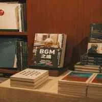
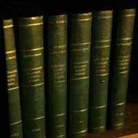
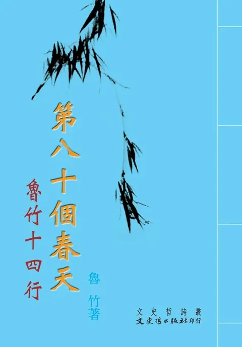
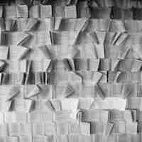

雜文雜說
NT$ 240

歌詞與朗誦詩
NT$ 220

花之戀（雁翼情詩集）
NT$ 180

昨夜不是夢
NT$ 220

心影集
NT$ 220
心靈上的陽光
NT$ 200

青溪涓涓流過
NT$ 360

春之海
NT$ 400

葡萄園30周年詩選
NT$ 0

心聲集
NT$ 220

大水漫過深冬
NT$ 140
愛的心音
NT$ 140

神秘的第五季
NT$ 180

方塊舞
NT$ 320

三月情懷
NT$ 360

中國詩歌選
NT$ 0
情結
NT$ 240

十五歲之歌
NT$ 180

三月交響：三月詩會同仁選集之二
NT$ 420

春夏秋冬
NT$ 200

籠中無鳥
NT$ 160

婚姻有哭有笑有車子
NT$ 140
燈語
NT$ 200
心弦詩集
NT$ 260

玫瑰歲月
NT$ 240

聽聽那聲音
NT$ 300
拾夢草
NT$ 180

袒露心靈
NT$ 240
風雨街燈
NT$ 220

三月風華
NT$ 280

詩的五重奏
NT$ 180
中華新詩選粹
NT$ 500
蘋果之傷
NT$ 200

月亮的青春期
NT$ 220

雨弦詩選
NT$ 280

致屈原：新詩集
NT$ 180

影像的約會
NT$ 240

驚豔
NT$ 240

思憶症
NT$ 200

如果河水醒來
NT$ 260

雲語
NT$ 250

七行詩
NT$ 200

心橋足音
NT$ 260

翡翠詩帖
NT$ 200

履塵詩集
NT$ 220

骨子裡風騷
NT$ 220

雕像
NT$ 200

山海盟詩詞
NT$ 220

未來世界
NT$ 240

遊目騁懷
NT$ 220

東海岸戀情
NT$ 240
山無陵
NT$ 160

葉子與茶如是說
NT$ 180

中國詩歌選2002年版
NT$ 400

出走的眼睛
NT$ 200

餘光盅
NT$ 320

詩藝飛揚
NT$ 450

山動了
NT$ 160

今夜有酒
NT$ 200

平凡詩集
NT$ 420

良性互動
NT$ 240

夏雨雪
NT$ 220
刺 心
NT$ 220

晨起所見
NT$ 220

白凌詩集
NT$ 180
心曲
NT$ 160

東海寄廬七十詩鈔
NT$ 320
洋桔梗的親情
NT$ 280

在那遙遠的地方
NT$ 220

文具群及其他
NT$ 150

生之吶喊
NT$ 260
種植一株寧靜
NT$ 240
詩瓣
NT$ 160

悅我人生
NT$ 240

傷痛詩集
NT$ 200

詩寫錦繡江山
NT$ 240

彩霞滿天
NT$ 240

狩獵
NT$ 280

福爾摩莎（BOD）
NT$ 220

幻夢花開一江山
NT$ 200
大詩壇：詩人手跡
NT$ 420

胡說草:周策縱新詩全集
NT$ 460

雪祭之塞納河的回憶
NT$ 240

春秋詩選
NT$ 380

詩寫美哉山水
NT$ 360

野農詩之錄（BOD）
NT$ 320
詩藝浩瀚
NT$ 560

所有浪花流傳著（BOD）
NT$ 280

心靈詩語（BOD）
NT$ 240
上海太陽島詩選
NT$ 140

擊掌
NT$ 240

詩說浮世百態
NT$ 300

賭徒（BOD）
NT$ 320

千禧啟泰詩存
NT$ 220

冬雷震震（BOD）
NT$ 320

詩想起（BOD）
NT$ 280

山楂樹（BOD）
NT$ 420

時空之樹
NT$ 450

能量雕塑的天使--在愛的路上手牽手
NT$ 380

日誌詩
NT$ 450

詩藝天地
NT$ 420

太陽照過來的時候
NT$ 300

森林、節能減碳與土地倫理
NT$ 340

以光年之速，你來
NT$ 200

海韻
NT$ 300

三月采風
NT$ 560

夢幻小品
NT$ 320
袖珍詩鈔
NT$ 320

英雄
NT$ 480

詩記那時風景
NT$ 280

流年流水橋自橫
NT$ 350

六個十年詩集：麥穗小詩選集
NT$ 320

第八十個春天：魯竹十四行
NT$ 280
繁華夜
NT$ 240
詩雨
NT$ 360

談心：魯竹十四行選集
NT$ 200

時光誌
NT$ 240

創世紀60周年同仁詩選(2004~2014)
NT$ 300

綿綿瓜瓞情
NT$ 180

禪拍拍我的肩膀
NT$ 420

新詩韻味濃
NT$ 360

情報
NT$ 220
囚徒：五千五百行長詩
NT$ 480
空茫等代
NT$ 300

歲月星語
NT$ 400

童詩的遊戲
NT$ 200

太陽的微笑
NT$ 260

行踏.注目
NT$ 220

感動: 青峰詩選
NT$ 300

瞬間: 青峰詩選
NT$ 300

當風吹起的時候
NT$ 280

猴戲: 魯竹十四行詩
NT$ 160
方塊舞
NT$ 420
心雲心語
NT$ 300

夏日的雙重奏
NT$ 350

捨了半生捨不了你
NT$ 460

情詩選
NT$ 280

觀 Comtemplation : 青峰詩選
NT$ 240
詩道: 魯竹十四行詩
NT$ 200
人生的命脈
NT$ 320

彩釉 好女人該有人疼
NT$ 500

探戈: 魯竹十四行詩
NT$ 240

種詩的人
NT$ 280
無詩之詩: 1983-2019作品選
NT$ 240

名字
NT$ 220

蕉風: 養浩軒俳句集
NT$ 300

我將穿過黑夜去看你
NT$ 320

亞媺詩畫精選集
NT$ 720

傅予世紀詩選(精華版)
NT$ 260
時光問答
NT$ 260

思慕
NT$ 220

蘭氏兄弟詩集
NT$ 600
流年流水橋自橫: 一卷不是詩人的詩(增訂再版)?
NT$ 520

第四十一種藍: 九月詩集
NT$ 220

空白
NT$ 480
一定= Be sure
NT$ 280

心花詩集
NT$ 220

長命無絕衰
NT$ 300

欲與君
NT$ 340

秀江
NT$ 160